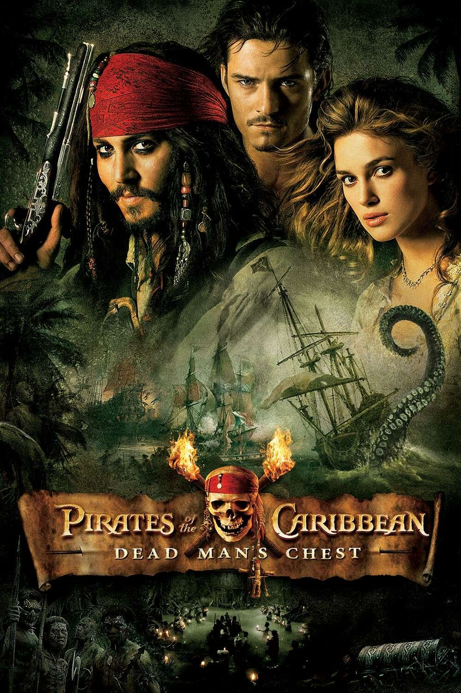

Film Top Picks Summary
Here’s a breakdown of the films that make up my personal top and why they might stand out as memorable classics

Pulp Fiction (1994)
Directed by Quentin Tarantino, Pulp Fiction is an iconic crime drama celebrated for its nonlinear narrative, razor-sharp dialogue, and unforgettable characters. The film intertwines multiple storylines involving gangsters, boxers, and petty criminals, creating a mosaic of humor, tension, and moral ambiguity. Standout moments include the "Royale with Cheese" conversation, Mia Wallace and Vincent Vega's dance at Jack Rabbit Slim's, and the thrilling "adrenaline shot" scene. Its blend of violence, dark humor, and a killer soundtrack cement its status as a cultural touchstone.

Why it stands out:
- Unique narrative structure.
- Tarantino’s masterful direction and screenplay.
- Iconic performances by John Travolta, Uma Thurman, and Samuel L. Jackson.
Joker (2019)
Directed by Todd Phillips, Joker is a gritty, psychological exploration of Arthur Fleck, a troubled man descending into madness and infamy as the iconic Batman villain. The film draws inspiration from 1970s character studies like Taxi Driver and The King of Comedy, showcasing a Gotham City steeped in despair and inequality. Joaquin Phoenix's transformative performance won him an Academy Award, as he portrayed Arthur’s transformation with unnerving depth and raw vulnerability.
Why it stands out:
- Joaquin Phoenix’s mesmerizing, Oscar-winning performance.
- A deeply unsettling and thought-provoking origin story.
- Stunning cinematography and Hildur Guðnadóttir’s haunting score.
Pirates of the Caribbean: Dead Man’s Chest (2006)
The second film in the Pirates of the Caribbean series, directed by Gore Verbinski, ups the ante with breathtaking visuals and a darker tone. Jack Sparrow, played to perfection by Johnny Depp, seeks to settle his debt with the terrifying Davy Jones, while Will Turner and Elizabeth Swann are caught in the chaos. Memorable set pieces include the Kraken attacks, the epic wheel fight, and Sparrow's antics on Cannibal Island. The cliffhanger ending left audiences eagerly awaiting the next chapter.

Why it stands out:
- A richly imagined world of swashbuckling adventure and supernatural intrigue.
- Davy Jones, an unforgettable CGI villain brought to life by Bill Nighy.
- The perfect mix of humor, action, and stunning visual effects.
Shrek (2001)
This animated comedy from DreamWorks subverted fairy tale tropes, offering a fresh, irreverent spin on the genre. Shrek, a grumpy ogre voiced by Mike Myers, embarks on a quest to rescue Princess Fiona alongside his loudmouthed yet lovable companion, Donkey (Eddie Murphy). Packed with clever humor, a heartfelt story, and an iconic soundtrack (“All Star” and “Hallelujah”), it became a cultural phenomenon and won the first-ever Academy Award for Best Animated Feature.
Why it stands out:
- Its witty humor appeals to both kids and adults.
- A groundbreaking, satirical take on fairy tales.
- Timeless voice performances and a feel-good message about self-acceptance.
Spider-Man 2 (2004)
Directed by Sam Raimi, Spider-Man 2 is often considered one of the greatest superhero films ever made. The film follows Peter Parker as he struggles to balance his personal life with his responsibilities as Spider-Man, all while facing off against the brilliant yet tragic villain Dr. Otto Octavius (Alfred Molina). The story delves into themes of sacrifice and perseverance, with emotionally charged performances and breathtaking action sequences like the train fight.
Why it stands out:
- A deep, emotional exploration of heroism and identity.
- Alfred Molina’s compelling portrayal of Doc Ock.
- Iconic action scenes, particularly the exhilarating train sequence.
Why They Fit Together in Your Top
These films resonate for their strong characters, gripping narratives, and moments of emotional or visual brilliance. They range across genres—crime, superhero, adventure, comedy—but share an ability to connect deeply with audiences through innovative storytelling and memorable experiences.
My Top 5 Favourite Films of All Time (Correct Order)
- Pulp Fiction (1994)
- Joker (2019)
- Spider-Man 2 (2004)
- Shrek (2001)
- Pirates of the Caribbean: Dead Man’s Chest (2006)
A Reel of Tales (A Short Poem)
In diners, seas, and city skies,
Heroes fall and villains rise.
An ogre’s heart, a clown’s despair,
A pirate’s quest, webs fill the air.
Five stories bold, their legends stay,
A timeless reel to light your day.
Back to Top